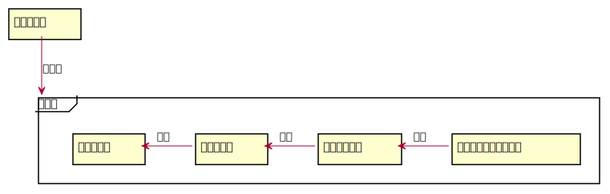

1. はじめに¶
この文章はトランプゲーム「BlackPoker」の全てのルールをまとめた文章です。
詳細なルールが記載されており、初心者の方は文章の量に圧倒されます。 ゲームをプレイする際に全てを熟読する必要はありませんが、 ルールについて深く知りたい、または新しいルールに触れたい方はぜひ熟読してください。
1.1. BlackPokerとは¶
当サークルが考案した1人1セットのトランプを使ったターン制の トレーディングカードゲームのようなトランプゲームです。 自分だけのオリジナルトランプを使って友達と遊べます。 プレイしている時のイメージは図のような感じです。(Fig. 1.1)
Fig. 1.1 プレイ風景¶
1.2. きっかけ¶
「また昔みたいに友達とカードゲームがしたい」
けど、仕事に追われ時間もなく、お金もかけられないのでカード資産も抱えられない。 昔のデッキを引っ張りだしてもカードパワーが違って平等に遊べないし、コミニティが狭い。 そんな悩みを解消しようと誰でも持っているトランプでカードゲーム風のルールを作ろうと思いました。
1.3. ゲームのストーリー¶
あなたのトランプはただのトランプではありません。 かつて大地を支配していた偉大な国々や強固な絆で結ばれた組織の魂が宿る遺産です。
これらのカードには、世界の歴史を彩る多彩な物語が織り込まれており、その物語たちはまるで時間を超えたタペストリーのように絡み合っています。
プレイヤーは歴史の再現者、リアニメーターとしてデッキに宿る過去の栄光を再現し、その国や組織がいかに素晴らしかったかを 戦いを通して対戦相手に示してください。
え？そんな国知らない？でしたらあなたのカードから創造してみてはいかがでしょうか。
1.4. 読み方¶
各章は次のことを説明しています。
- 1 はじめに
ルールの指針や全体像を説明
- 2 コアルール
BlackPokerのコアであるターン制ゲームのルールを説明
- 3 共通ルール
ゲームの開始方法など全体的なゲームの流れを説明
- 4 フォーマット
ゲーム内で使えるアクションの定義方法を説明
- 5 対戦レギュレーション
ゲーム開始時に決定する規則について説明
1.4.1. 用途別読み方¶
文章が複雑であるため、用途に合わせて読むことをおすすめします。
1.5. ルール指針¶
ルールを作成・修正するための指針を示します。
- 誰とでも戦える ~目指すは老若男女~
ルールを知りトランプを持っていれば誰とでも遊べるゲームを目指します。
- 個性が出せる ~オリジナルトランプ・デッキ構築~
さまざまなトランプが使え見た目で個性を出せるのはもちろんのこと、 デッキ構築の面でも自分のしたい戦い方が表現できることを目指します。
- 短く終わる ~1戦15分~
時間をかけずさっと遊べることを目指します。
- ずっと使えるデッキ
愛着のあるカードがずっと使えるようなルールとします。
- 必要な物は最小限 ~トランプのみ~
用意するものはトランプのみ。それ以外の道具は必要ないルールとします。
- プレイング重視 ~5：3：2＝技：運：構築~
運やデッキ構築より技量を重視したルールを目指します。
- ベースルールはトレーディングカードゲーム
カードゲームプレイヤーが覚えやすいルールを目指します。
- カスタマイズ可能 ~基本と拡張の分離~
基本ルールと拡張ルールを分離し、大富豪のようにローカルルールが作成できることを目指します。
- ルールの更新 ~飽き防止＆不備改善~
新たなルールを度々公開し、飽きを防止します。またルールに不備がある場合、随時改善します。
- 相手のカードに触らない
盗難防止とネット対戦対応に努めます。
1.6. ルールの構成¶
ルールの構成は次のようになっています。 ルールを階層化し、ルール指針を具体化しています。(Fig. 1.2)

Fig. 1.2 ルール構成¶
更にルールを詳しく記載すると次のようになります。 専門的な表現になるので、理解出来なくても構いません。(Fig. 1.3)
![rectangle ルール指針
frame ルール{
rectangle コアルール as core
rectangle 共通ルール as common
rectangle フォーマット as format
rectangle 対戦レギュレーション as match_reg
rectangle フレーム as frame
rectangle オプション as options
' rectangle プレイヤー as player
core <|-- common : 継承
common <|-- format : 継承
match_reg o-- format : 内包
match_reg o-- frame : 内包
match_reg o-- options : 内包
' match_reg <. player : 選択
format <.. options : 依存
format <. frame : 依存
frame <.. options : 依存
}
ルール指針 --> ルール : 具体化
note right of match_reg #white
プレイヤーは対戦する前に
対戦レギュレーションを選択する
end note](../_images/plantuml-25d895c0cb10acacb2584c83ee11d0fe0b970036.svg)
Fig. 1.3 ルール構成(詳細)¶